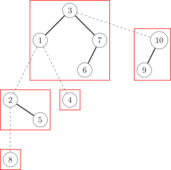

Global bst
引入
前置知识：树链剖分
由于树链剖分的时间复杂度为 $O(n\log^2 n)$，而我们熟知的 LCT 虽然时间复杂度为 $O(n\log n)$，但常数较大，可能比树链剖分还慢．那么有什么既是 $O(n\log n)$ 的，常数又相对较小的方法呢？这个时候全局平衡二叉树就出现了．
全局平衡二叉树实际上是一颗二叉树森林，其中的每颗二叉树维护一条重链．但是这个森林里的二叉树又互有联系，其中每个二叉树的根连向这个重链链头的父亲，就像 LCT 中一样．但全局平衡二叉树是静态树，区别于 LCT，建成后树的形态不变．
全局平衡二叉树是一种可以处理树上链修改/查询的数据结构，可以做到：
- $O(\log n)$ 一条链整体修改．
- $O(\log n)$ 一条链整体查询．
- $O(\log n)$ 求最近公共祖先，子树修改，子树查询等，这些复杂度和重链剖分是一样的．
主要性质
- 全局平衡二叉树由很多棵二叉树通过轻边连起来组成，每一棵二叉树维护了原树的一条重链，其中序遍历的顺序就是这条重链深度单调递增的顺序．每个节点都仅出现在一棵二叉树中．
- 边分为重边和轻边，重边是包含在二叉树中的边，维护的时候就像正常维护二叉树一样，记录左右儿子和父节点．轻边从一颗二叉树的根节点指向它所对应的重链顶端节点的父节点．轻边维护的时候 "认父不认子"，即只能从子节点访问到父节点，不能反过来．注意，全局平衡二叉树中的边和原树中的边没有对应关系．
- 算上重边和轻边，全局平衡二叉树的高度是 $O(\log n)$ 级别的．这条是保证全局平衡二叉树时间复杂度的性质．
下面是一个全局平衡二叉树建树的例子．第一张图是原树，以节点 1 为根节点．实线是重边．
第二张图是建出来的全局平衡二叉树，其中虚线是轻边，实线是重边，每一棵二叉树用红圈表示．

建树
首先是像普通重链剖分一样，一次 DFS 求出每个节点的重儿子．然后从根开始，找到根节点所在的重链，对于这些点的轻儿子递归建树，并连上轻边．然后我们需要给重链上的点建一棵二叉树．我们先把重链上的点存到数组里，求出每个点轻儿子的子树大小之和加一（即该点本身所贡献的 size）．然后我们按照这个求出这条重链的加权中点，把它作为二叉树的根，两边递归建树，并连上重边．
代码如下：
???+ note "实现"
```cpp
std::vector
void dfsS(int u) {
sz[u] = 1;
for (int v : G[u]) {
dfsS(v);
sz[u] += sz[v];
if (sz[v] > sz[son[u]]) son[u] = v;
}
}
int b[N], bs[N], l[N], r[N], f[N], ss[N];
// 给b中[bl,br)内的点建二叉树，返回二叉树的根
int cbuild(int bl, int br) {
int x = bl, y = br;
while (y - x > 1) {
int mid = (x + y) >> 1;
if (2 * (bs[mid] - bs[bl]) <= bs[br] - bs[bl])
x = mid;
else
y = mid;
}
// 二分求出按bs加权的中点
y = b[x];
ss[y] = br - bl; // ss：二叉树中重子树的大小
if (bl < x) {
l[y] = cbuild(bl, x);
f[l[y]] = y;
}
if (x + 1 < br) {
r[y] = cbuild(x + 1, br);
f[r[y]] = y;
}
return y;
}
int build(int x) {
int y = x;
do
for (int v : G[y])
if (v != son[y])
f[build(v)] =
y; // 递归建树并连轻边，注意要从二叉树的根连边，不是从儿子连边
while (y = son[y]);
y = 0;
do {
b[y++] = x; // 存放重链中的点
bs[y] = bs[y - 1] + sz[x] - sz[son[x]]; // bs：轻儿子size和+1，求前缀和
} while (x = son[x]);
return cbuild(0, y);
}
```
由代码可以看出建树的时间复杂度是 $O(n\log n)$．接下来我们可以证明树高是 $O(\log n)$ 的：考虑从任意一个点跳父节点到根．跳轻边就相当于在原树中跳到另一条重链，由重链剖分的性质可得跳轻边最多 $O(\log n)$ 条；因为建二叉树的时候根节点找的是算轻儿子的加权中点，那么跳一次重边算上轻儿子的 size 至少翻倍，所以跳重边最多也是 $O(\log n)$ 条．整体树高就是 $O(\log n)$ 的．
查询
以上就是关于全局平衡二叉树的部分．剩下关于链修改和链查询的操作方法相对简单，只需要从要操作的点出发，一直跳跃到根节点．要操作某个点所在的重链上比它深度小的所有点，本质上等同于在这条重链的二叉树中操作目标节点左侧的所有节点．这些操作可以分解成一系列子树操作，与普通二叉树的维护方法类似，其中涉及到维护子树和以及打子树标记．在这一过程中，使用的是标记永久化．也可以用 pushdown 来打标记，用 pushup 维护子树和，不过这种方式可能相对复杂，因为通常情况下，处理二叉树是自上而下进行操作，但在这里，需要首先确定跳跃路径，然后再从上到下进行 pushdown，可能导致常数较大．
代码如下：
???+ note "实现" ```cpp // a：子树加标记 // s：子树和（不算加标记的） int a[N], s[N];
void add(int x) {
bool t = true;
int z = 0;
while (x) {
s[x] += z;
if (t) {
a[x]++;
if (r[x]) a[r[x]]--;
z += 1 + ss[l[x]];
s[x] -= ss[r[x]];
}
t = (x != l[f[x]]);
if (t && x != r[f[x]]) z = 0; // 跳过轻边要清空
x = f[x];
}
}
int query(int x) {
int ret = 0;
bool t = true;
int z = 0;
while (x) {
if (t) {
ret += s[x] - s[r[x]];
ret -= 1ll * ss[r[x]] * a[r[x]];
z += 1 + ss[l[x]];
}
ret += 1ll * z * a[x];
t = (x != l[f[x]]);
if (t && x != r[f[x]]) z = 0; // 跳过轻边要清空
x = f[x];
}
return ret;
}
```
此外，对于子树操作，就是要考虑轻儿子的，需要再维护一个包括轻儿子的子树和、子树标记，可以去做 "P3384【模板】轻重链剖分"．
例题
??? note "P4751【模板】"动态 DP"& 动态树分治（加强版）"
```cpp
#include
struct edge {
int to;
edge *nxt;
} edges[MAXN * 2 + 5];
edge *ncnt = &edges[0], *Adj[MAXN + 5];
int n, m;
struct Matrix {
int M[2][2];
Matrix operator*(const Matrix &B) const {
static Matrix ret;
for (int i = 0; i < 2; i++)
for (int j = 0; j < 2; j++) {
ret.M[i][j] = -INF;
for (int k = 0; k < 2; k++)
ret.M[i][j] = max(ret.M[i][j], M[i][k] + B.M[k][j]);
}
return ret;
}
} matr1[MAXN + 5], matr2[MAXN + 5]; // 每个点维护两个矩阵
int root;
int w[MAXN + 5], dep[MAXN + 5], son[MAXN + 5], siz[MAXN + 5], lsiz[MAXN + 5];
int g[MAXN + 5][2], f[MAXN + 5][2], trfa[MAXN + 5], bstch[MAXN + 5][2];
int stk[MAXN + 5], tp;
bool vis[MAXN + 5];
void AddEdge(int u, int v) {
edge *p = ++ncnt;
p->to = v;
p->nxt = Adj[u];
Adj[u] = p;
edge *q = ++ncnt;
q->to = u;
q->nxt = Adj[v];
Adj[v] = q;
}
void DFS(int u, int fa) {
siz[u] = 1;
for (edge *p = Adj[u]; p != NULL; p = p->nxt) {
int v = p->to;
if (v == fa) continue;
dep[v] = dep[u] + 1;
DFS(v, u);
siz[u] += siz[v];
if (!son[u] || siz[son[u]] < siz[v]) son[u] = v;
}
lsiz[u] = siz[u] - siz[son[u]]; // 轻儿子的siz和+1
}
void DFS2(int u, int fa) {
f[u][1] = w[u], f[u][0] = 0;
g[u][1] = w[u], g[u][0] = 0;
if (son[u]) {
DFS2(son[u], u);
f[u][0] += max(f[son[u]][0], f[son[u]][1]);
f[u][1] += f[son[u]][0];
}
for (edge *p = Adj[u]; p != NULL; p = p->nxt) {
int v = p->to;
if (v == fa || v == son[u]) continue;
DFS2(v, u);
f[u][0] += max(f[v][0], f[v][1]); // f[][]就是正常的DP数组
f[u][1] += f[v][0];
g[u][0] += max(f[v][0], f[v][1]); // g[][]数组只统计了自己和轻儿子的信息
g[u][1] += f[v][0];
}
}
void PushUp(int u) {
matr2[u] = matr1[u]; // matr1是单点加上轻儿子的信息，matr2是区间信息
if (bstch[u][0]) matr2[u] = matr2[bstch[u][0]] * matr2[u];
// 注意转移的方向，但是如果我们的矩乘定义不同，可能方向也会不同
if (bstch[u][1]) matr2[u] = matr2[u] * matr2[bstch[u][1]];
}
int getmx2(int u) { return max(matr2[u].M[0][0], matr2[u].M[0][1]); }
int getmx1(int u) { return max(getmx2(u), matr2[u].M[1][0]); }
int SBuild(int l, int r) {
if (l > r) return 0;
int tot = 0;
for (int i = l; i <= r; i++) tot += lsiz[stk[i]];
for (int i = l, sumn = lsiz[stk[l]]; i <= r; i++, sumn += lsiz[stk[i]])
if (sumn * 2 >= tot) // 是重心了
{
int lch = SBuild(l, i - 1), rch = SBuild(i + 1, r);
bstch[stk[i]][0] = lch;
bstch[stk[i]][1] = rch;
trfa[lch] = trfa[rch] = stk[i];
PushUp(stk[i]); // 将区间的信息统计上来
return stk[i];
}
return 0;
}
int Build(int u) {
for (int pos = u; pos; pos = son[pos]) vis[pos] = true;
for (int pos = u; pos; pos = son[pos])
for (edge *p = Adj[pos]; p != NULL; p = p->nxt)
if (!vis[p->to]) // 是轻儿子
{
int v = p->to, ret = Build(v);
trfa[ret] = pos; // 轻儿子的treefa[]接上来
}
tp = 0;
for (int pos = u; pos; pos = son[pos]) stk[++tp] = pos; // 把重链取出来
int ret = SBuild(1, tp); // 对重链进行单独的SBuild(我猜是Special Build?)
return ret; // 返回当前重链的二叉树的根
}
void Modify(int u, int val) {
matr1[u].M[1][0] += val - w[u];
w[u] = val;
for (int pos = u; pos; pos = trfa[pos])
if (trfa[pos] && bstch[trfa[pos]][0] != pos && bstch[trfa[pos]][1] != pos) {
matr1[trfa[pos]].M[0][0] -= getmx1(pos);
matr1[trfa[pos]].M[0][1] = matr1[trfa[pos]].M[0][0];
matr1[trfa[pos]].M[1][0] -= getmx2(pos);
PushUp(pos);
matr1[trfa[pos]].M[0][0] += getmx1(pos);
matr1[trfa[pos]].M[0][1] = matr1[trfa[pos]].M[0][0];
matr1[trfa[pos]].M[1][0] += getmx2(pos);
} else
PushUp(pos);
}
int read() {
int ret = 0, f = 1;
char c = 0;
while (c < '0' || c > '9') {
c = getchar();
if (c == '-') f = -f;
}
ret = 10 * ret + c - '0';
while (true) {
c = getchar();
if (c < '0' || c > '9') break;
ret = 10 * ret + c - '0';
}
return ret * f;
}
void print(int x) {
if (x == 0) return;
print(x / 10);
putchar(x % 10 + '0');
}
int main() {
scanf("%d %d", &n, &m);
for (int i = 1; i <= n; i++) w[i] = read();
int u, v;
for (int i = 1; i < n; i++) {
u = read(), v = read();
AddEdge(u, v);
}
DFS(1, -1);
// 求重儿子
DFS2(1, -1);
// 求初始的DP值，也可以在Build()里面求，但是这样写就和树剖的写法统一了
for (int i = 1; i <= n; i++) {
matr1[i].M[0][0] = matr1[i].M[0][1] = g[i][0];
matr1[i].M[1][0] = g[i][1], matr1[i].M[1][1] = -INF; // 初始化矩阵
}
root = Build(1); // root即为根节点所在重链的重心
int lastans = 0;
for (int i = 1; i <= m; i++) {
u = read(), v = read();
u ^= lastans; // 强制在线
Modify(u, v);
lastans = getmx1(root); // 直接取值
if (lastans == 0)
putchar('0');
else
print(lastans);
putchar('\n');
}
return 0;
}
```